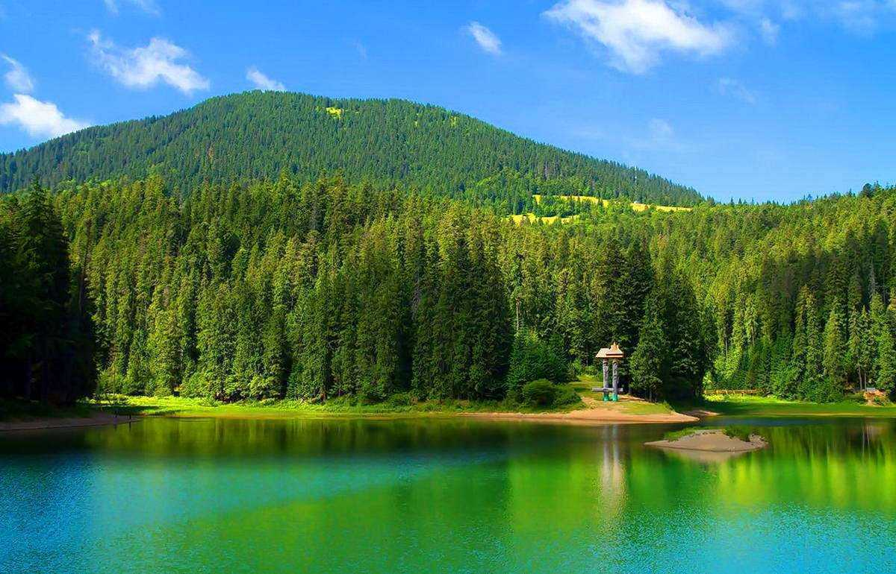
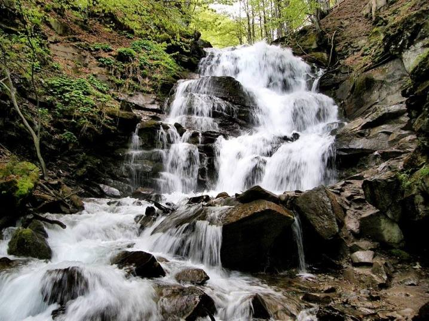
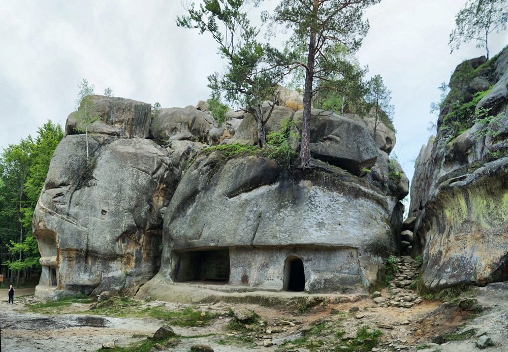

Гора Говерла
Говерла — це найвища точка України, висота якої становить 2061 метр над рівнем моря. Сходження на цю гору є справою честі для кожного українського мандрівника. Шлях до вершини проходить через декілька природних зон: від густих хвойних лісів до альпійських лук (полонин). З самої вершини відкривється неймовірний вид на 360 градусів, де в ясну погоду можна побачити навіть сусідні країни.

Озеро Синевир
Синевирське озеро вважається одним із семи природних чудес України. Воно виникло понад 10 тисяч років тому внаслідок потужного землетрусу. Глибина озера сягає 24 метрів. Легенда розповідає, що озеро утворилося від сліз графської доньки Синь на місці, де її коханого, простого пастуха Вира, було вбито за наказом графа. Сьогодні це заповідна зона, де природа зберегла свій первісний вигляд.

Водоспад Шипіт
Водоспад Шипіт заворожує своїм неповторним "голосом". Його води, що стікають з високих схилів гори Гемба, розбиваються об скельні виступи, утворюючи справжню симфонію звуків. Це один із найповноводніших водоспадів Закарпаття. Навколо нього панує особливий мікроклімат: навіть у літню спеку тут прохолодно і волого. Щороку на галявинах біля Шипота проходять масштабні фестивалі.

Скелі Довбуша
Цей скельно-печерний комплекс є справжнім лабіринтом, створеним природою та часом. Величезні пісковики, що досягають 80 метрів у висоту, мають химерні форми, які змушують працювати уяву. За історичними даними, у XVII-XVIII століттях тут переховувалися опришки — народні месники під проводом Олекси Довбуша, а самі скелі служили їм неприступною природною фортецею.